RICHMOND, VIRGINIA
1414 W Clay Street
UNIT A + UNIT B · 4 BEDROOMS · 4 FULL BATHROOMS EACH
THE RESIDENCE
Two homes.
Room to live.
Set in Richmond’s beautiful Carver neighborhood, 1414 W Clay Street offers two attached, two-story townhomes—Unit A and Unit B—just a short walk from VCU and the Siegel Center. Each spacious residence features four bedrooms and four full bathrooms, a large light-filled living room, a dedicated dining area, and a generously sized kitchen. An in-unit laundry room and convenient rear off-street parking complete these thoughtfully designed homes.
AVAILABILITYUNIT A · AVAILABLE AUGUST 2027 · $3,500/MO
UNIT B · AVAILABLE AUGUST 2027 · $3,500/MO
INQUIRE ABOUT THIS RESIDENCE →UNIT B · AVAILABLE AUGUST 2027 · $3,500/MO
THE PROPERTY
Explore the townhomes.
Bright, generous interiors and thoughtfully designed everyday spaces.
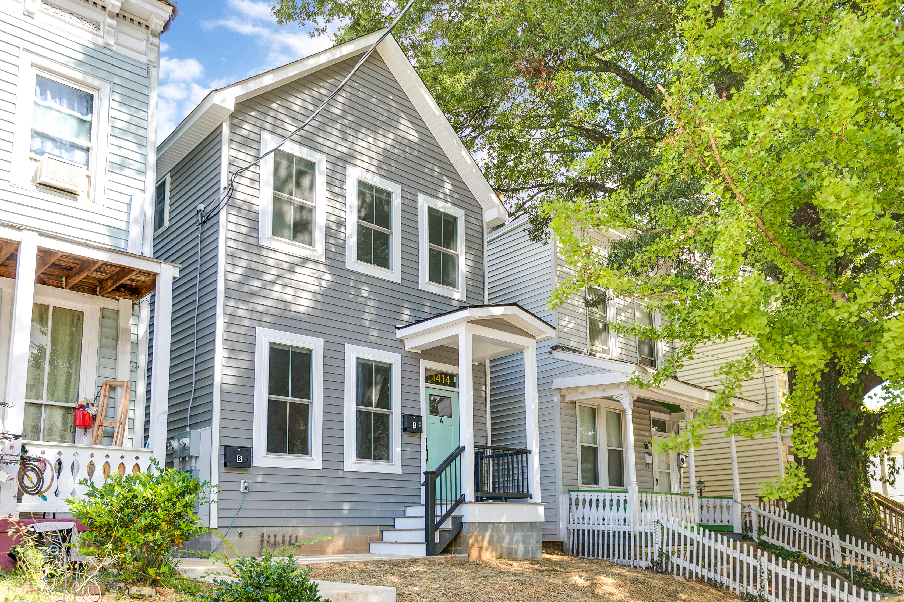
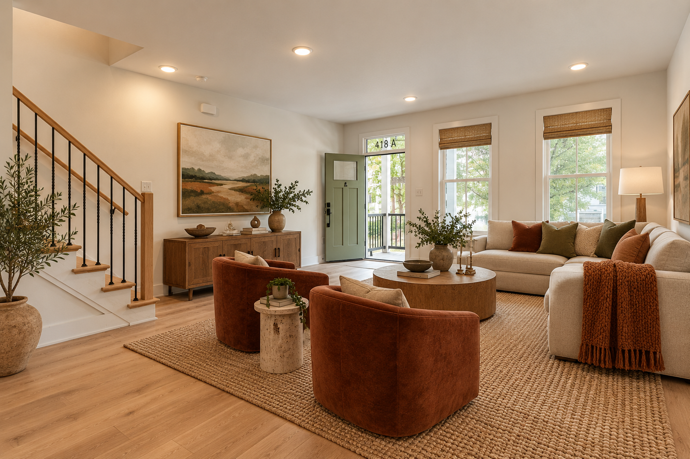
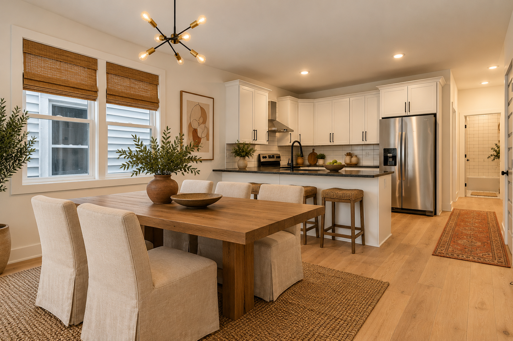
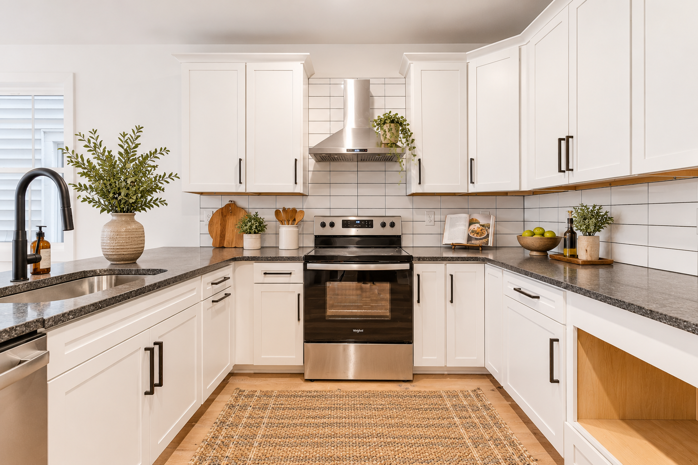
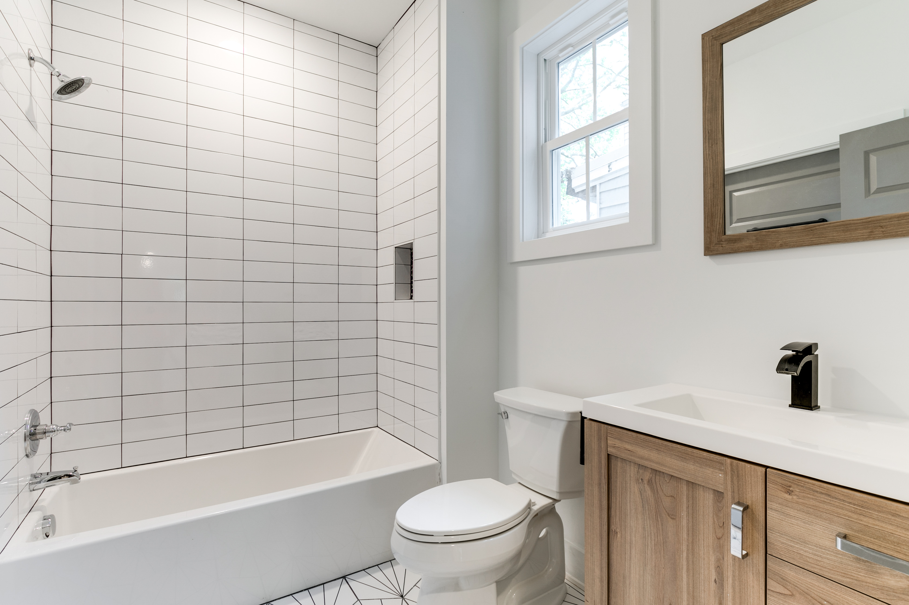
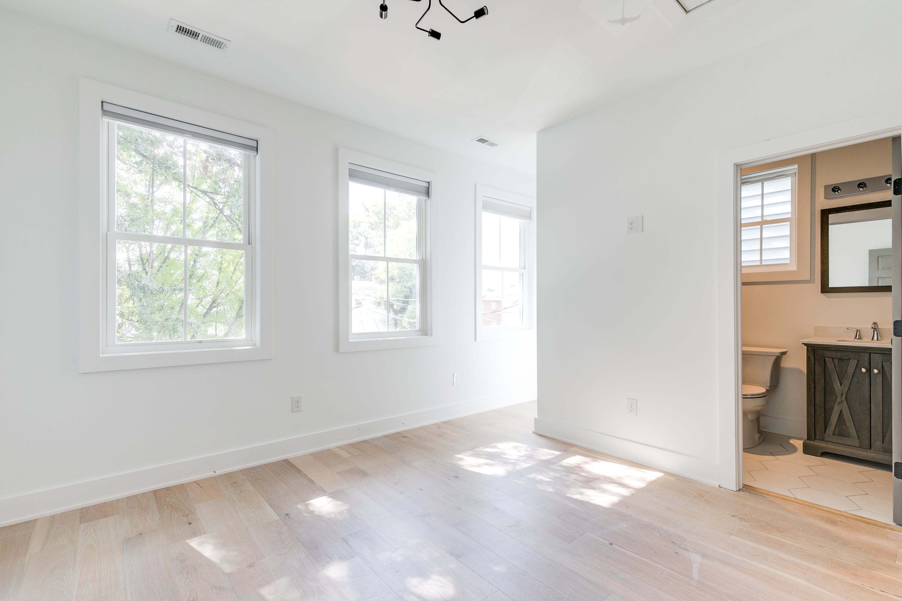
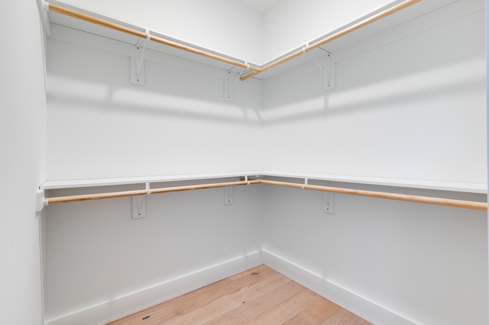
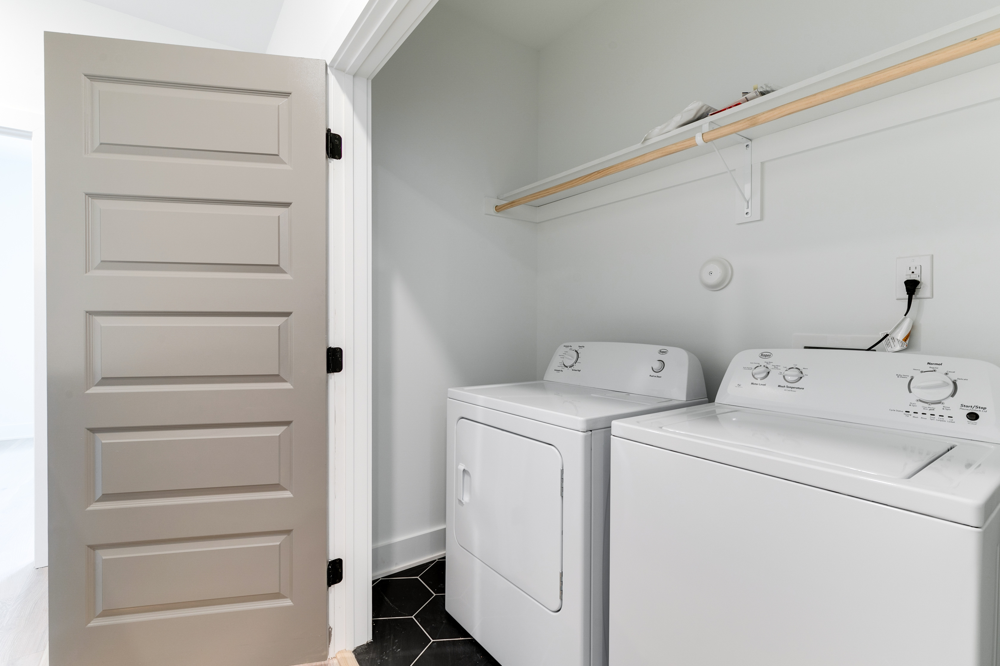
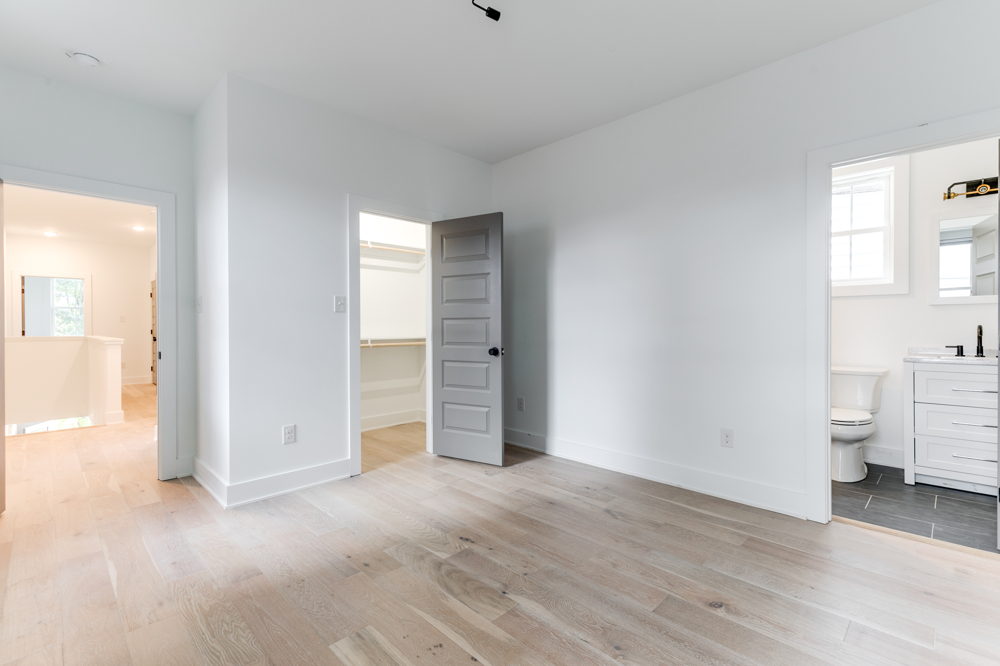
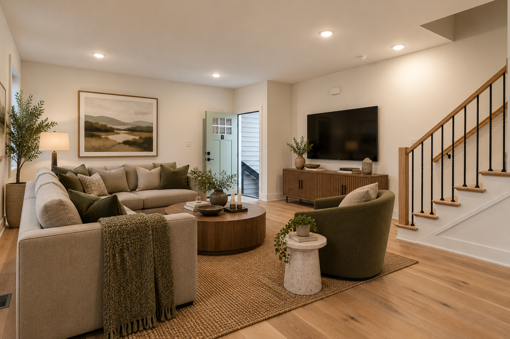
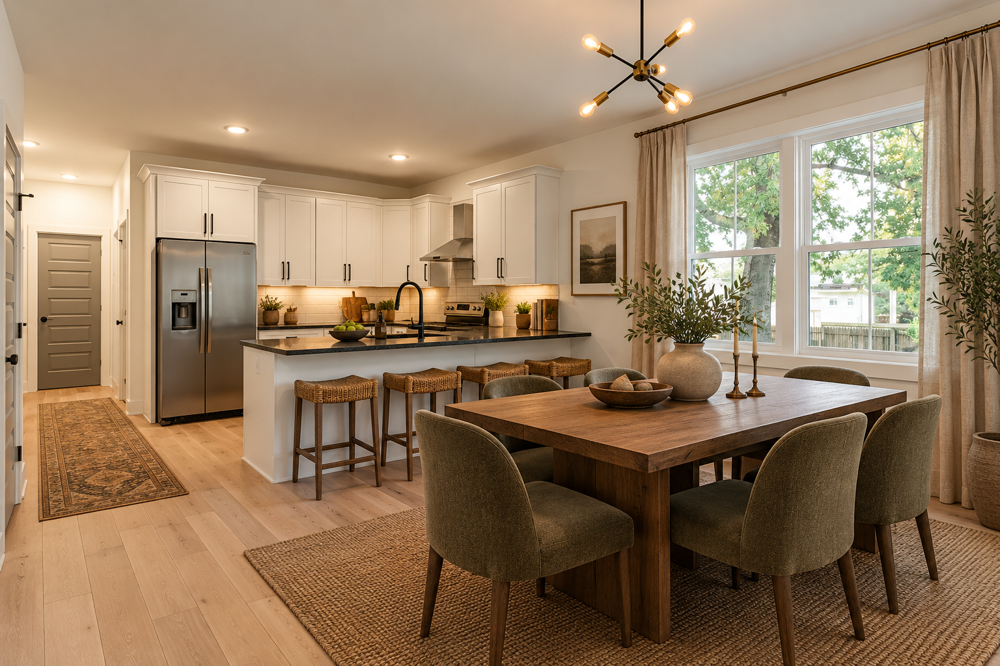